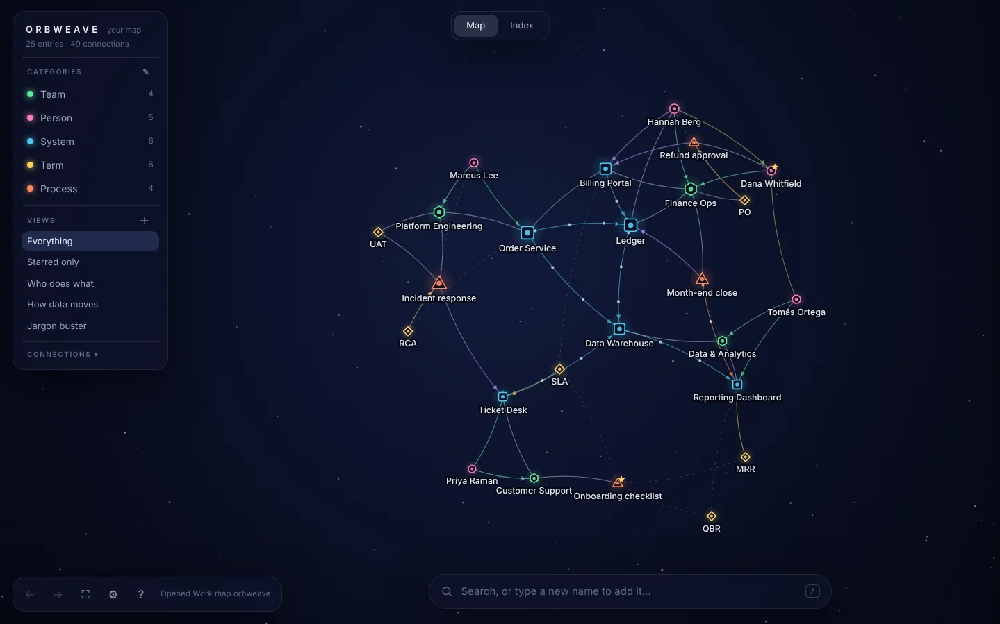
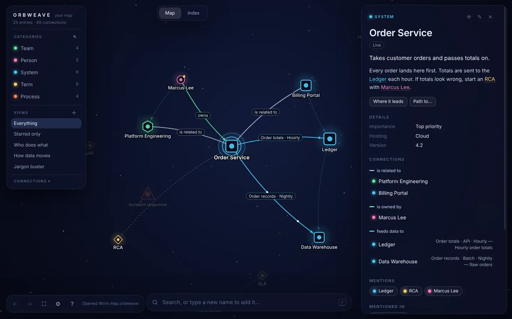
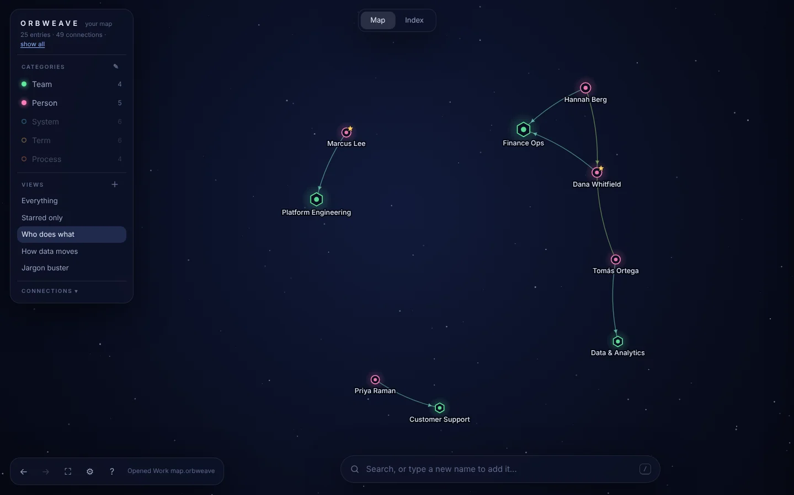
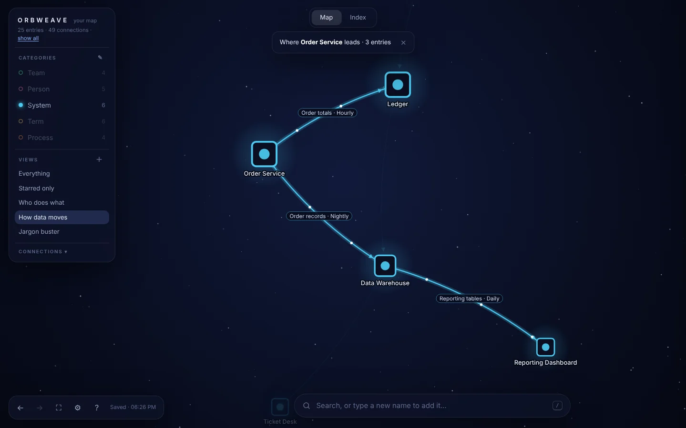
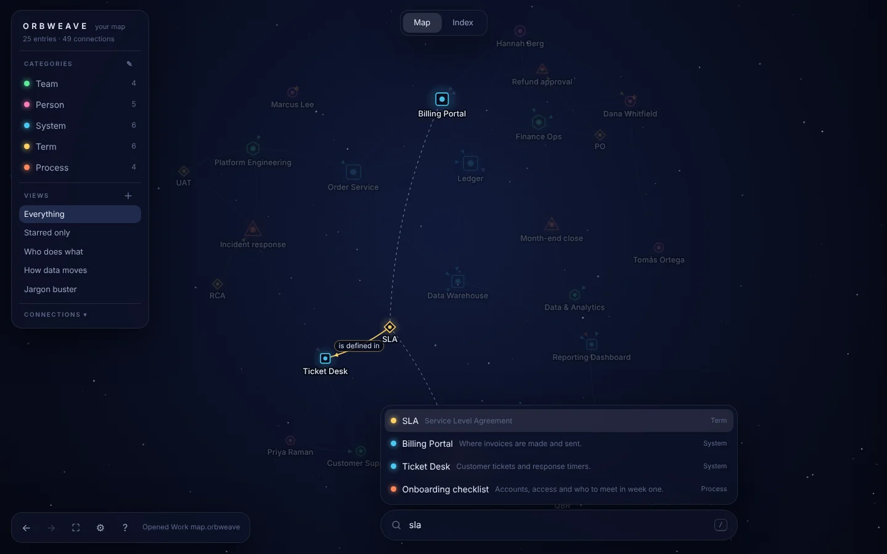
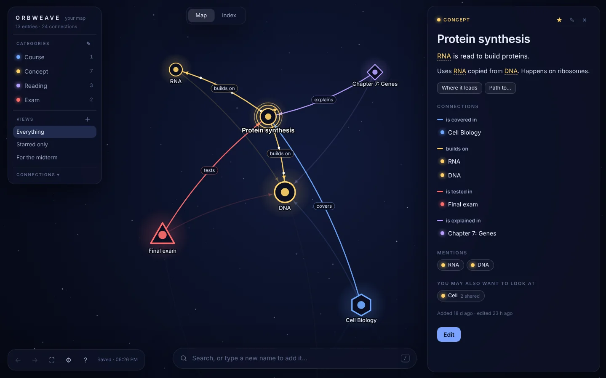

Orbweave is a desktop app that maps the people, teams, systems, terms and ideas you have to keep track of, and how they connect. Built for a new job, a new course, or any pile of things that is too much to hold in your head.

New workplaces come with a vocabulary: abbreviations, system names, who owns what, who to ask. Courses do too. Orbweave gives it all one place and shows how the pieces relate.
It starts empty. Create the kinds of things you need: Person, Team, System, Term, Concept, Exam. Pick a colour and a shape for each.
Define your own, such as "owns / is owned by" or "feeds data to / receives data from". Build them as a sentence. No arrows or symbols to type.
Write another entry's name in a description and the two connect on their own.
Save which categories and connection types to show. Switch between "Who does what", "How data moves" or "Jargon only" in one click.
Mark a connection as carrying something and trace where it leads or where it came from, step by step.
Type a few letters and jump to a term, a person or a system, with its full meaning beside it.
Open an entry to see what it is, who owns it, what it connects to, and where it is mentioned.

Hide what you do not need right now. "Who does what" shows only people and teams.

Trace a path along the connections that carry something, with labels for what and how often.

Abbreviations come with their full name and a one-line meaning in the search results.

The same idea works for courses: concepts, readings and exams, and how each one builds on the next.

Orbweave is for notes you might not be allowed to put in the cloud.
Download a build from the Releases page, or build it yourself. You need Node.js 22.12 or newer.
npm install npm start # run it npm run dist:win # Windows portable .exe (build on Windows) npm run dist:mac # macOS .dmg (build on a Mac)